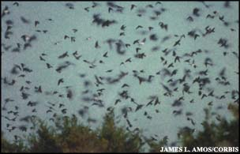

At the mission of San Juan Capistrano in California the swallows traditionally return from their distant wintering grounds on March 19. Human pressures on these birds have apparently reduced their numbers and made their return date less reliable. But in countless places around the north temperate zone of Earth, people look for the return of these graceful, swooping birds and are delighted by their punctuality. Here in southern New Jersey I look for swallows to come back to a local pond on one of the first few days of April.
Swallows and their relatives, the swifts, include the big purple martin, the scissor-tailed and buff-breasted barn swallow, the chimney swift ("a cigar with wings and twinkling flight") and many more species. Watch for your local varieties to return as not the first but one of the most definite - and delightful - signs of spring.
-Fred Schaff
|
 |
|
|